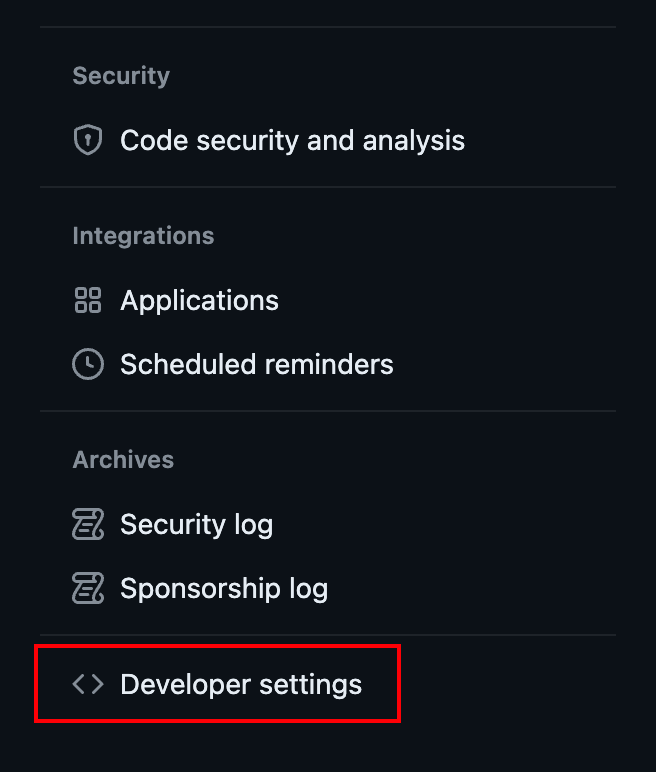

距离上次写博客已经过去了 6 年， 最近计划重新开始写博客，所以把原来的 Hexo 项目老代码修整了下，搞了下部署。
创建 Hexo 项目
因为原来我的 Hexo 项目是大概 6 年前的版本了，在部署的时候遇到 Hexo 生成不了 html 的问题。所以选择重新安装最新版本的 Hexo，然后直接迁移 source 文件夹即可。
创建 Github 仓库
需要在 GitHub 建好两个仓库，为什么是两个？一个仓库也是可以的，直接参考Hexo 官方部署方案，流程简单很多。
我这里使用两个仓库目的主要是希望博客源码仓库私有化和 Github Pages 仓库分开管理，单纯个人喜好。所以后续部署会跟上面 Hexo 官方文档上部署方法有点不同。
- Hexo 项目仓库
- username.github.io 仓库
- username 为 github 的账号名字。其他命名也是可以的，只是访问路径会变成 username.github.io/<仓库名>
创建个人访问令牌（Personal Access Token）
因为我们需要在 Hexo 项目仓库 执行 Github Actions 向 username.github.io 仓库推送代码，由于 Github 权限限制，我们需要在 GitHub 账户中创建一个具有足够权限的个人访问令牌（Personal Access Token，简称 PAT）。这个令牌需要有足够的权限来修改仓库。
点击右上角头像 -> 打开 Settings -> 左边栏滚到最后找到 Develop Setting 打开，如图
找到 Personal Access Token 点击 Tokens（classic） -> 选择 Generate new token (classic) ，如图
- 给令牌起个名字并且勾选红框中的 repo 的访问权限，然后点击生成 token（注意： 确保复制并安全地保存这个令牌。GitHub 不会再次显示这个令牌，所以这是你唯一的机会复制它），如图


- 将生成的 PAT 添加到你的博客源代码仓库的 Secrets，名字填入 PERSONAL_TOKEN 后面会用到这个变量名，如图

创建 Github Actions 脚本
在你的 Hexo 项目根目录下创建一个 .github/workflows 文件夹（如果尚未存在）。
在该文件夹内创建一个新的 YAML 文件（例如 hexo-deploy.yml），用于定义 GitHub Actions 工作流。
复制如下配置到 YAML 文件
1 | name: Deploy Hexo to GitHub Pages |
- 提交本地的 Hexo 项目代码到对应 Github 仓库即可触发 Github Actions 工作流实现自动部署，然后访问你的 username.github.io ！